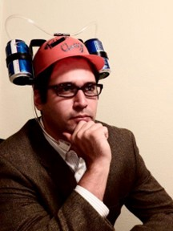
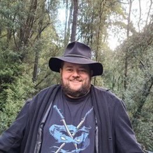

Authors of the Books

Drew Hayes
7 Series, a total of 35 books
About the Author
From his blog’s about the author page: “Drew Hayes is an author from Texas who has written several books and found the gumption to publish a few (so far). He graduated from Texas Tech with a B.A. in English, because evidently he's not familiar with what the term "employable" means. Drew has been called one of the most profound, prolific, and talented authors of his generation, but a table full of drunks will say almost anything when offered a round of free shots. Drew feels kind of like a D-bag writing about himself in the third person like this. He does appreciate that you're still reading, though. Drew would like to sit down and have a beer with you. Or a cocktail. He's not here to judge your preferences. Drew is terrible at being serious, and has no real idea what a snippet biography is meant to convey anyway. Drew thinks you are awesome just the way you are. That part, he meant. Drew is off to go high-five random people, because who doesn't love a good high-five? No one, that's who.”
Are their other series good?
I’ve read a few of Drew Hayes’ other books, and he’s a pretty good author overall. I will say that his other series hasn’t gripped me the same way that his series Super Powereds has. A lot of his series are still in the works. One of his other series, “Spells, Swords, & Stealth”, is an interesting take on Dungeons and Dragons where the NPCs of a D&D game take up the campaign. It’s really interesting!

Shirtaloon (Travis Deverell)
Only 1 series, 12 books published so far
About the Author
From the website of the author’s “about me” page: “In the middle of penning a dry academic paper, Shirtaloon had a revelation: he desperately needed to write something very silly. It all begins with an idea. Maybe you want to launch a business. Maybe you want to turn a hobby into something more. Or maybe you have a creative project to share with the world. Whatever it is, the way you tell your story online can make all the difference. To his surprise and delight, he found a warm and welcoming audience in the world of online serialized fiction. Transitioning his work into actual books, he is continually startled at the appetite for his particular blend of high magic, wild adventure and absurd nonsense. Success has allowed him to fund an excessive board game collection he doesn’t have time to play because he’s always writing. The unplayed games sit on the shelves behind him as he works, silently judging.
Are their other series good?
As I stated above, Shirtaloon hasn’t written any other series besides He Who Fights With Monsters.
Brandon Mull
9 Series, 3 Side Books, 1 new series starting in a month, 29 books
About the author
From the website of the author’s “about” page: “Brandon Mull is the #1 New York Times best-selling author of the Fablehaven, Beyonders, and Five Kingdoms series. A kinetic thinker, Brandon enjoys bouncy balls, squeezable stress toys, and popping bubble wrap. He lives in Utah in a happy little valley near the mouth of a canyon with his four children and a dog named Buffy the Vampire Slayer. Brandon loves meeting his readers and hearing about their experiences with his books.”
Are their other series good?
I have read about every single major book from Brandon Mull, and I can confidently state that every single book that comes from the mind of Brandon Mull is absolutely fantastic. I have been reading his books since I was 10 years old, and I highly recommend to everyone that sees this that if you end up liking Fablehaven/Dragonwatch, I guarantee you will love the rest of his series.
Zogarth (No knowledge on his name or face)
About the Author
Zogarth is a fantasy and LitRPG author best known for The Primal Hunter, a series that blends deep progression mechanics with large scale worldbuilding. He left his corporate job in 2020 to pursue writing full time, quickly building a dedicated fanbase through Royal Road and Patreon. His background in video games and MMORPGs strongly influences his storytelling, especially his focus on character growth, skill systems, and fast paced action. Today, he continues to expand The Primal Hunter universe while maintaining an active community of readers who enjoy his detailed mechanics and immersive style.
Are their other series good?
Much like Shirtaloon, The Primal Hunter is the only series that Zogarth has worked on. He’s only been a writer for the last 6 years and has dedicated himself full-time to his series.